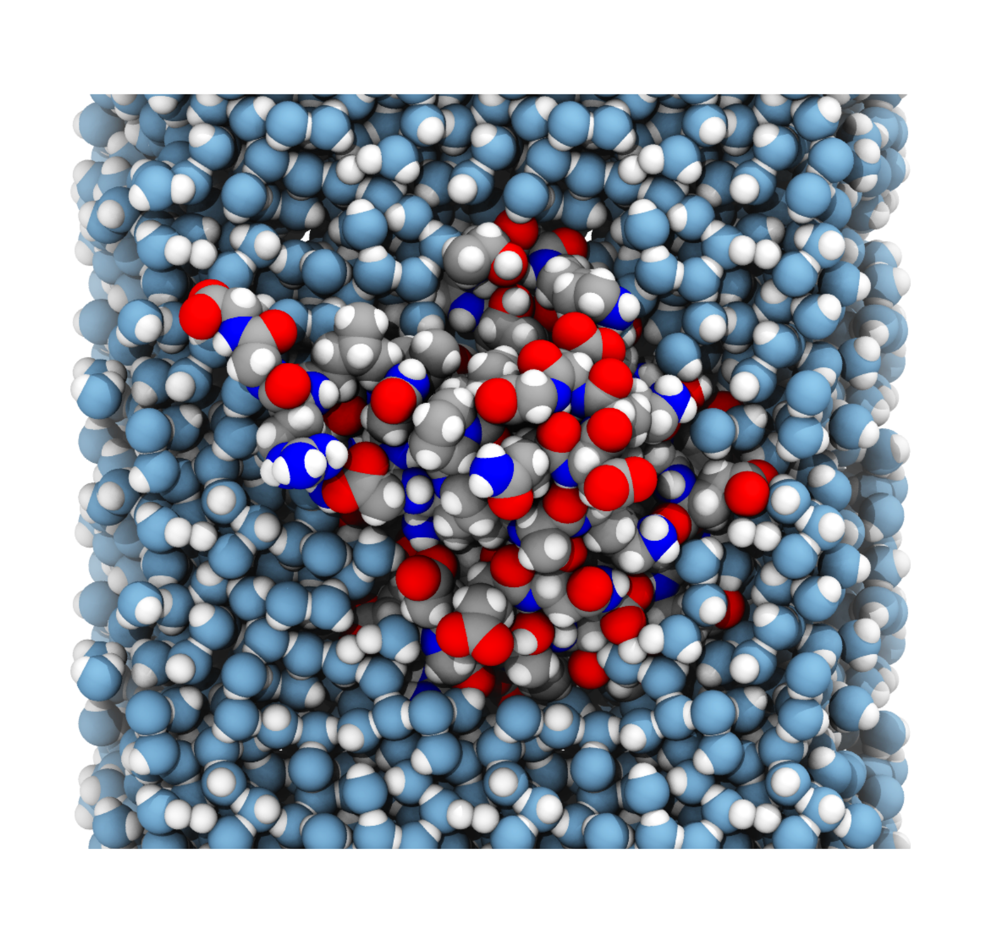
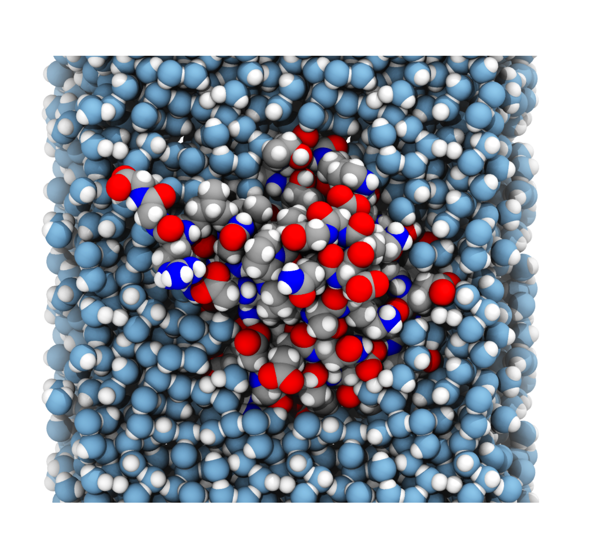
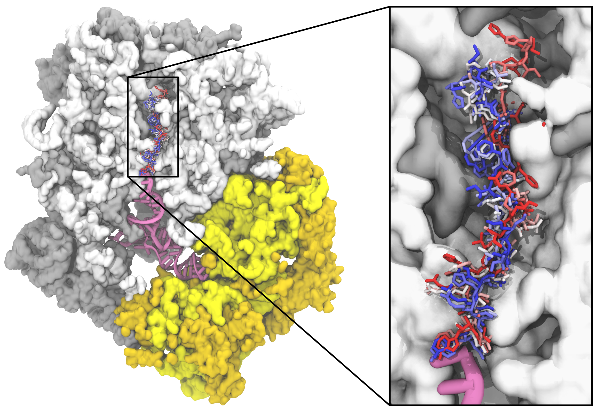
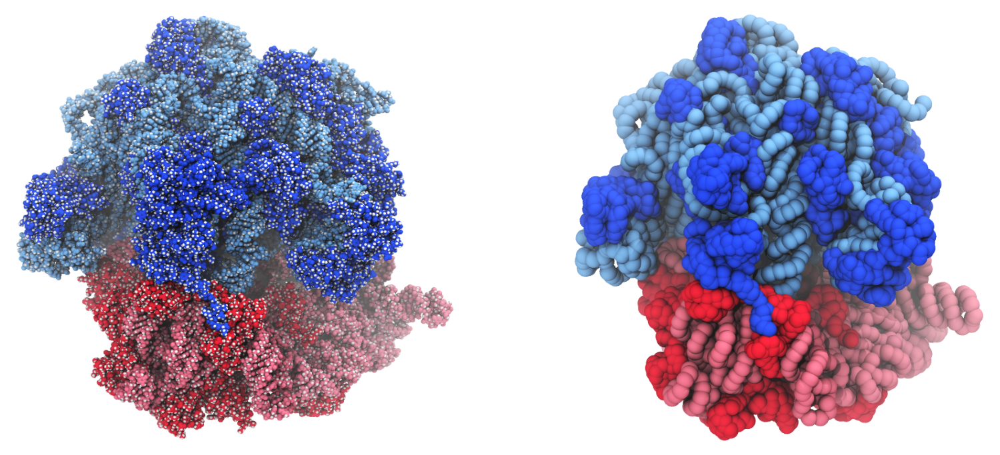

Keynote talk at RNA Club 2023 in Olšina, Czechia.
Created using Reveal.js.
Use right arrow for browsing.

Exploring ribosome dynamics through large-scale computer simulations
Michal H. Kolář
michal@mhko.science


take this home:
Computer simulations may provide atomistic details of ribosome structure, dynamics, and energetics.
1. ribosome essentials
2. molecular dynamics simulations
3. co-translational folding of VemP
4. long-range allostery
5. ongoing studies
1. ribosome essentials
2. molecular dynamics simulations
3. co-translational folding of VemP
4. long-range allostery
5. ongoing studies

1. ribosome essentials
2. molecular dynamics simulations
3. co-translational folding of VemP
4. long-range allostery
5. ongoing studies
„Prediction is very difficult, especially if it’s about the future.“
MD simulations forecast molecular events based on laws of physics.
Generated by AI 2023-10-22, bing.com: "predicting future based on laws of physics, cartoon, black-white style enhanced by shades of blue"
 

- averages (structure)
- fluctuations (dynamics)
- thermodynamics (ΔG, ΔS, KD)
- rates of processes (lifetimes, rate constants)
- biophysical data (NMR, SAXS)
Three challenges related to the ribosome
foto: Mikael Kanerva link
2500+1500 nodes
0.55 exaFLOP
€ 144 million
foto: Fade Creative link
1. ribosome essentials
2. molecular dynamics simulations
3. co-translational folding of VemP
4. long-range allostery
5. ongoing studies
Bock et al. PMID: 29202442
Kolář et al. PMID: 35150281

Helmut Grubmüller
Lars V. Bock
Gabor Nagy
Sara M. Vaiana
John Kunkel
Vibrio alginolyticus
Vibrio Export Monitoring Polypeptide (VemP)
photo courtesy: Dr. Gary Gaugler, Visuals Unlimited, Inc.

VemP
- cryo-EM shows extreme compation in the exit tunnel
- Su et al., PMID: 28556777
- inner helix inactivates two nucleobases needed for peptidyl transfer
take this home:
The tunnel walls play a decisive role in folding VemP.

Structure
Dynamics
1. ribosome essentials
2. molecular dynamics simulations
3. co-translational folding of VemP
4. long-range allostery
5. ongoing studies
McGrath et al. PMID: 29202442
take this home:
The presence or absence of PDF can be predicted from conformations of distant ribosome parts.
Prediction accuracy

1. molecular dynamics simulations
2. ribosome essentials
3. co-translational folding of VemP
4. long-range allostery
5. ongoing studies
Coarse-grained simulations
Lower resolution, lower accuracy, larger timescales
Decoding of non-standard genetic code
with M. Eliáš group (University of Ostrava)
Ancestral ribosomes
with K. Hlouchová group (Charles University)
take this home:
Computer simulations may provide atomistic details of ribosome structure, dynamics, and energetics.